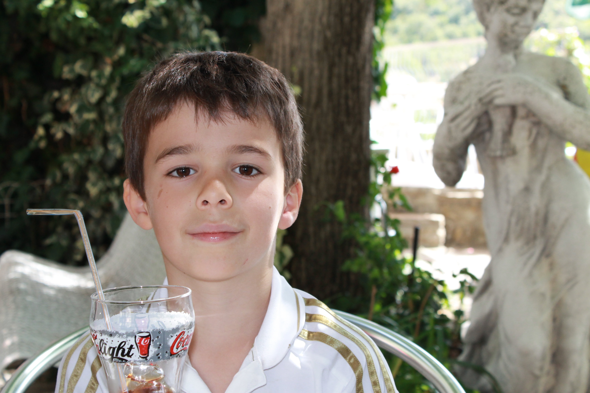

Hello everyone, I'm Antoine Chibon

I'm a French student in first year of BBA at ESSEC Business School. I had the chanche to live in Rome for 4 years when i was younger.
Discover The Culture
Myself
I'm 18y old, I live in Paris but I had the chance to grew up in Rome for 4 years so I learnt Italian in my childhood. I have one little sister, called Audrey. i'm in a Business School, I want to work in the finance world.
My hobbies
I'm a someone who love sports and when i say sports i want to say a lot of differents sports but my 3 favourites are Football⚽️, Cycling🚴 and Formula 1🏎️. I'm also very interested in music and video games. I listen to like three hours of music on Deezer every day and I love to try new games on my Xbox Serie S.
The Culture
The culture is an independent media run by a small team of students all united by the same passions. We put forward all the domains and events that we are passionate about: music, cinema, fashion, sports,...
In France, we feel that the media doesn't talk enough about our interests, so we decided to share with you what we are passionate about on this Instagram account.

Follow Me and The Culture account
Made by Antoine Chibon with learn.lewagon.com